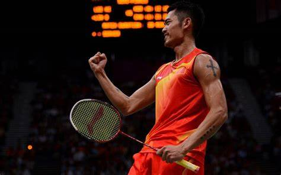
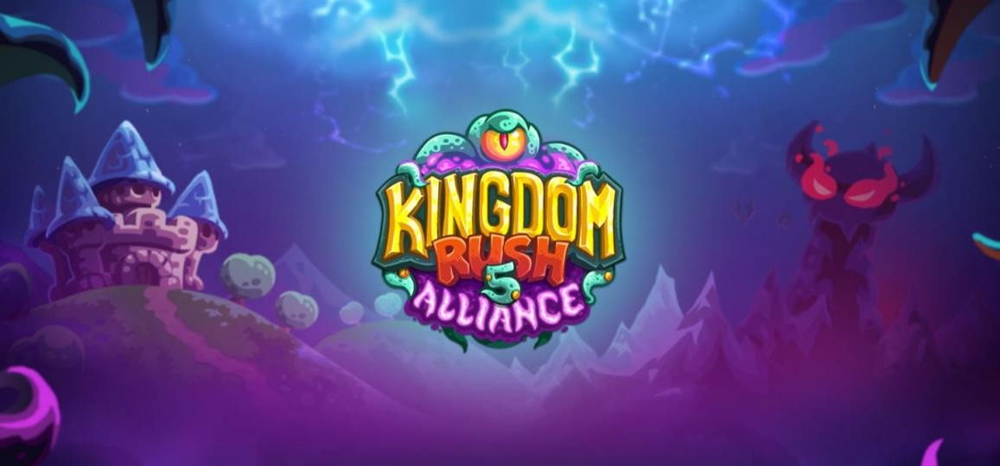

团队主页 | 于鸿彬 | 张博闻 | 邹鑫凯 | 王智奇 | 王笑妍 | 金闫彤
姓名：王智奇
小组：畅通五组
职位：剧情企划、玩法策划
兴趣：政治、历史
爱好：围棋、羽毛球、益智小游戏
大家好，我是王智奇，来自山西省临汾市。我在畅通五组中担任主程序/策划，参与游戏性设计，是剧情企划的主要承担者。我是一个比较幽默风趣、阳光开朗的e人，在朋友面前更会放飞自我，但却又是一个小宅男，经常宅在宿舍不愿出门。我的爱好是围棋，羽毛球，也喜欢玩一些比较益智的单机小游戏（比如王国保卫战系列），同时对政治历史知识有着浓厚的兴趣，这些知识也给我很多解决问题的灵感。我非常喜欢的一句话是罗曼•罗兰的名言：世界上只有一种英雄主义，看清生活的真相后还依然热爱生活。我以此来自我要求。
 
BIT | 2023级计算机科学与技术 | 畅通五组